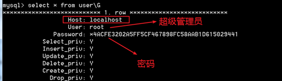

MySQL 管理
数据的备份
属于DCL：数据控制语言！control
备份：就是将已有的数据复制一份，存放到其他的存储单元！
常见的有：文本备份，数据备份和sql备份
文本备份
文本备份是最简单的，复制——粘贴！
一般认为，只适合Myisam存储引擎的表！
因为Myisam引擎的表它会将表分为三个部分来进行存储
文本备份的缺点：
每次都需要备份整个全部文件，非常浪费磁盘空间！
数据备份
就是只备份一张表的数据部分！
采用这种备份方式，如果误删了表的全部记录，还可以还原（也就是误使用delete语句），但是如果将整个表都删除了（误使用drop），不能还原！
备份语法
select *|字段列表 into outfile 文件地址 from 表名;
1 | select * into outfile 'd:/stu.sql' from stu; |

还原语法
load data infile 文件路径 into table 表名[字段列表];
1 | load data infile 'd:/stu.sql' into table stu; |
数据的导出工具 mysqldump
将表的结构和数据通过sql语句的形式进行备份！
mysql中有一个专门用来sql备份的客户端 mysqldump.exe！ 位于bin目录下，不需要登录即可使用。在命令行窗口使用。
备份语法
1 备份库
1 | ## 备份一个库 |
2 备份表1
2
3
4
5
6
7
8
9
10
11
12
13
14
15
16## 一次备份一个表
mysqldump –hPup 数据库 表名 > 指定的文件中
## 一次备份多个表
# 表名之间是使用空格分隔
mysqldump –hPup 数据库 表名1 表名2 表名n > 指定的文件中
# -h 主机名，本地可省略
# -P 端口，可省略
# -u 用户名
# -p 密码
# > 输出重定向
## 示例
mysqldump -u root -p -B studb stu1 > d:/studb.sql
mysqldump -u root -p -B studb stu1 stu2 > d:/studb.sql
还原语法
1 | ## 导入到指定库中 |
用户和权限管理
用户权限管理：在不同的项目中给不同的角色（开发者）不同的操作权限，为了保证数据库数据的安全。
通常，一个用户的密码不会长期不变，所以需要经常性的变更数据库用户密码来确保用户本身安全（mysql客户端用户）
用户管理
Mysql需要客户端进行连接认证才能进行服务器操作：需要用户信息。Mysql中所有的用户信息都是保存在mysql数据库下的user表中。

默认的，在安装Mysql的时候，如果不选择创建匿名用户，那么意味着所有的用户只有一个：root超级用户
在mysql中，对用户管理中，是由对应的Host和User共同组成复合主键来区分用户。User：代表用户名。Host：代表允许访问数据库的客户端（IP或者主机地址）。如果host使用%代表所有的用户（客户端）都可以访问。
创建用户
基本语法：1
2
3
4
5
6
7
8
9
10
11
12
13
14
15
16-- 使用 create user 语句创建用户
create user 'username' identified by '明文密码';
-- 或
create user 'username'@'host' identified by '明文密码';
-- -------------------------------------------------------------------------------
-- 使用 grant 语句创建用户
-- TODO
-- -------------------------------------------------------------------------------
-- 直接操作mysql数据表(不推荐)
-- 必须拥有对mysql.user表的insert权限
-- TODO:有些版本可能某些字段不同
-- insert into mysql.user(Host,User,Password,[privilegelist])
-- values('host','username',password('pwd'),privilegevaluelist);
用户 ： 可以是 '用户名' 或'用户名'@'主机地址'
主机地址： 省略时默认为% ，即所有主机可访问此账户。privilegelist 权限字段password() 加密密码privilegevaluelist 对应的权限的值
示例：
1 | -- create user 语句创建localhost主机才可用的用户 |
删除用户
基本语法：
1 | -- 使用 drop user 语句删除用户(推荐) |
示例：
1 | -- 使用 drop user 语句删除用户 |
修改密码
Mysql中提供了多种修改的方式：基本上都必须使用对应提供的一个系统函数：password()，需要靠该函数对密码进行加密处理。
普通用户修改密码
普通用户登录后，通过set语句设置自己的密码。
1 | set password = password('new_password'); |
'new_password' 新密码
root用户修改普通用户密码
1 | -- 使用 set 语句修改 |
root用户修改root的密码
1 | -- 使用 set 语句修改 |
root 密码丢失的解决方案
如果忘记了root用户密码，就需要去找回或者重置root用户密码
1 使用 –skip-grant-tables 选项启动mysql服务
首先，停止mysql服务 。
启动服务器但是跳过权限，当前启动的服务器没有权限概念：非常危险，任何客户端，不需要任何用户信息都可以直接登录，而且是root权限。
Windows 中，如果mysql目录添加到环境变量中，可直接使用 mysqld或mysqld-nt来启动服务，否则，在bin目录使用如下命令：1
2
3
4
5-- mysqld 命令
mysqld --skip-grant-tables
-- mysqld-nt 命令
mysqld-nt --skip-grant-tables
Linux 中，使用mysqld_safe或使用 /etc/init.d/mysql命令来启动服务1
2
3
4
5-- mysqld_safe 命令
mysqld_safe --skip-grant-tables user=mysql
-- /etc/init.d/mysql 命令
/etc/init.d/mysql start-mysqld --skip-grant-tables
启动mysql服务后，就可以用root用户登录了
2 使用root登录，重置密码1
2-- widows:无需密码登录root
mysql -u root
登录成功后，可修改root的密码，参考 root修改root的密码 章节。
3 加载权限表
修改密码后，必须用如下语句加载权限表，新的密码才能生效，同时mysql服务器开始权限验证。
1 | flush privileges; |
之后，将mysqld --skip-grant-tables的窗口关闭，即可使用新密码来登录mysql。
权限管理
在mysql中将权限管理分为三类：
1、 数据权限：增删改查（select|update|delete|insert）
2、 结构权限：结构操作（create|drop）
3、 管理权限：权限管理（create user|grant|revoke）：通常只给管理员如此权限
授予权限：grant
将权限分配给指定的用户
基本语法：grant 权限列表 on 库名.表名 to 用户;
权限列表：使用逗号分隔，但是可以使用all privileges代表全部权限
数据库.表名：可以是单表(数据库名字.表名)，可以是具体某个数据库(数据库.* )，也可以整库（*.*）

取消权限：revoke
权限回收：将权限从用户手中收回
基本语法：revoke 权限列表 on 库名.表名 from '用户名' [@主机地址];
刷新权限：flush
Flush：刷新，将当前对用户的权限操作，进行一个刷新，将操作的具体内容同步到对应的表中。
基本语法：flush privileges;